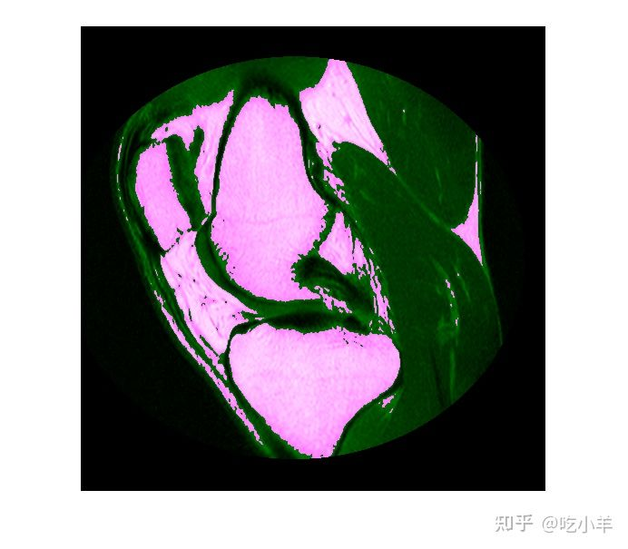
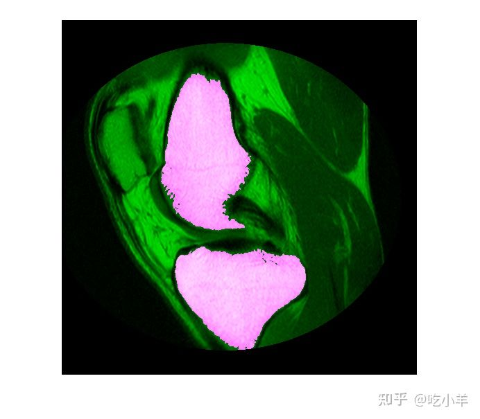
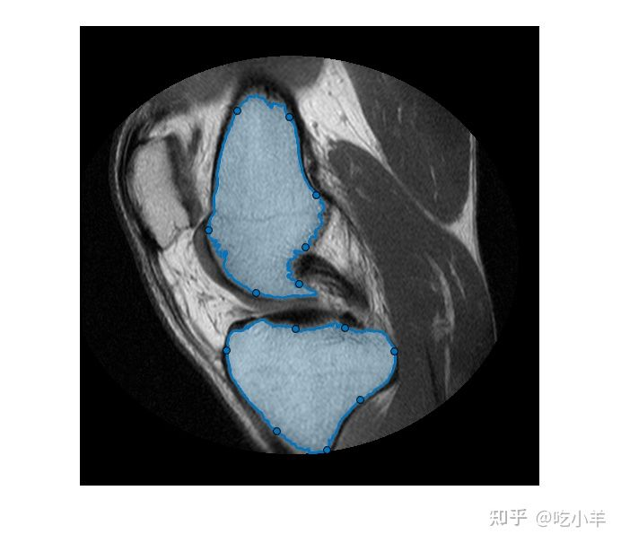

Home
本示例说明如何通过将逻辑分割蒙版转换为徒手绘制的ROI对象来优化逻辑分割蒙版。在这种方法中，您可以利用手绘ROI对象的交互式重塑功能来使分割蒙版的边缘更好地适合您要分割的图像区域的形状。
简介-图像分割
分割算法用于分割图像的感兴趣部分。为了说明，此示例使用K-means聚类来分割MRI图像中的骨骼和组织。
im = dicomread('knee1.dcm');
segmentedLabels = imsegkmeans(im,3);
boneMask = segmentedLabels==2;
imshowpair(im, boneMask);

后处理分割蒙版
通常，自动分割算法的结果需要进行额外的后处理以清理蒙版。第一步，从蒙版中选择两个最大的骨骼，即股骨和胫骨。
boneMask = bwareafilt(boneMask, 2); imshowpair(im, boneMask);

将蒙版转换为手绘ROI对象
要优化自动k均值分割的边缘，请将两个蒙版转换为交互式徒手绘制的ROI对象。首先，检索描绘这两个分割区域的边界像素的位置。请注意，这些ROI对象是密集采样的-它们的Position属性与图像像素具有相同的分辨率。
blocations = bwboundaries(boneMask,'noholes');
figure
imshow(im, []);
for ind = 1:numel(blocations)
% Convert to x,y order.
pos = blocations{ind};
pos = fliplr(pos);
% Create a freehand ROI.
drawfreehand('Position', pos);
end

编辑ROI区域
手绘ROI对象允许简单的“橡皮筋”交互式编辑。要编辑ROI，请沿ROI边界单击并拖动任何拖曳点。您可以通过双击ROI边缘或使用右键单击边缘可访问的上下文菜单在边界上的任何位置添加其他拖曳点。
将手绘ROI转换回蒙版
编辑ROI后，使用ROI对象的createMask方法将这些ROI对象转换回二进制蒙版。请注意将边界像素包括在最终蒙版中所需的附加步骤。
% Convert edited ROI back to masks.
hfhs = findobj(gca, 'Type', 'images.roi.Freehand');
editedMask = false(size(im));
for ind = 1:numel(hfhs)
% Accumulate the mask from each ROI
editedMask = editedMask | hfhs(ind).createMask();
% Include the boundary of the ROI in the final mask.
% Ref: https://blogs.mathworks.com/steve/2014/03/27/comparing-the-geometries-of-bwboundaries-and-poly2mask/
% Here, we have a dense boundary, so we can take the slightly more
% performant approach of just including the boundary pixels directly in
% the mask.
boundaryLocation = hfhs(ind).Position;
bInds = sub2ind(size(im), boundaryLocation(:,2), boundaryLocation(:,1));
editedMask(bInds) = true;
end
======================================================================
我的测试结果及程序
下面是我测试的代码：

注：本文根据MATLAB官网内容修改而成。